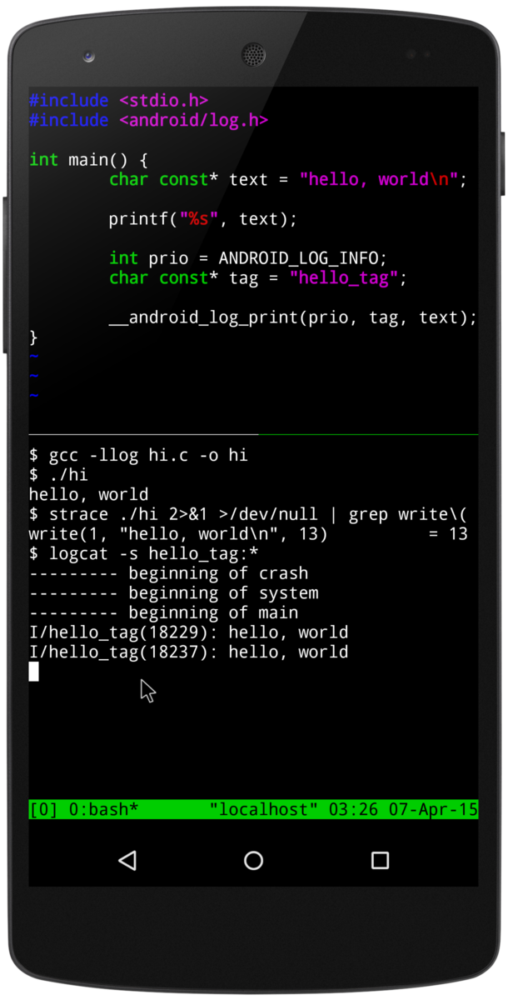

I’m writing code to back up my user data off a website that lets me
see all of my info (including querying by time, account etc) but
doesn’t have export features (officially). I am certain there’s an API
behind the site that I just have to make sense of.
Since the webapp is requesting data from the API when I click, we
should be able to record the web traffic to explore the API. My first
thought was to use tcpdump(8), a powerful network sniffer. But for
HTTPS traffic, the TLS encryption makes the network-level capture
useless. We can of course look into MITM HTTPS proxies. But it turns
out it can be even easier than that, as we can tell Firefox to record
this for us during normal website use. Let’s see how Firefox can help
in reverse-engineering APIs!
When writing long sentences in documentation repositories, git tends to show
really unhelpful diffs. They are unreadable because long lines aren’t broken,
which hides edits happening towards end of line. A colleague of mine asked me if git
couldn’t be configured to make this sort of thing more obvious. Challenge accepted!
Figure 1: Can you spot the edit made in a long line of text?
Get a cool graph of commits from the command line! For newbies and experts
alike, git is a bit hard to visualize. Here’s a handy git command to make
understanding git easier.
git log --decorate --oneline --graph
Figure 1: Git graph of this repository
This can be made into a git command via an entry your ~/.gitconfig:
[alias]
graph = log --decorate --oneline --graph
Code Snippet 1:
Alias "graph" defined in ~/.gitconfig file
Last night, I presented about Termux to EdLug, the Edinburgh Linux User group
(see the event page on meetup.com) in a talk titled “The freedom of shelling
out on Android”. It was tons of fun showing off how your Android phone/tablet
getting a terminal unlocks a powerful tool!

I've made the slides available on this website, click on the slide below.
Remember that there are speaker notes for people following at home, press `S` to
use them. These were built with [Reveal.js](https://revealjs.com).
This blog is meant to record some of the thoughts I keep coming back to, or
discussions I’ve had over and over again with different people. My
rule of thumb for inclusion here is “if you’ve had to say it more than
twice, it’s time to write it down”.
See the About page for my background and motivations.
Look forward more posts as I try to condense my thoughts in written
form.